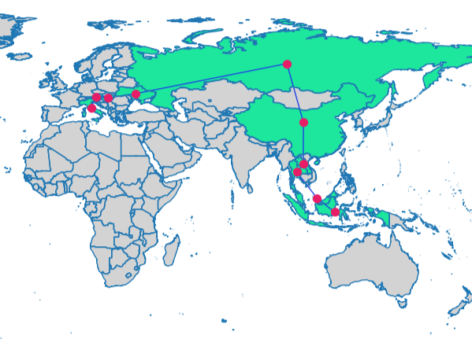
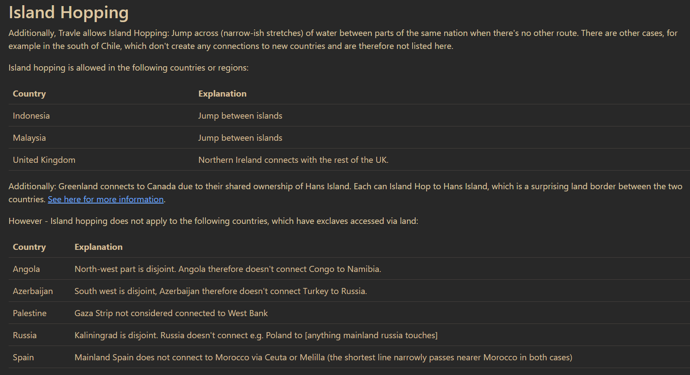

Shortest Path between two Countries
Project Background
What are the minimum number of borders to cross to get from Italy to Indonesia? This question plagued me one day, after I visited travel.earth: A game where you guess the shortest path between two countries, crossing the least borders in the process.
Here is an example:

Minimum number of borders to go from China to Singapore : 4 Countries to cross:
1) China -> Laos
2) Laos -> Thailand
3) Thailand -> Malaysia
4) Malaysia -> Singapore
While playing, I wondered if it were possible to make a python script that could play this game flawlessly; This project is the result.
1. Data
I used Natural Earth’s data package, which contains GeoJSON polygons, to provide shapes for all the world's countries. I was specifically looking for the political borders of each country.
2. Libraries
import requests
import geopandas as gpd
import networkx as nx
import matplotlib.pyplot as plt
Our problem, finding the shortest path between two countries, can be reduced to a graph theory problem, where each country is a node, and other countries they border are an edge. Hence, I decided to use Python’s NetworkX library, which allows me to work with graphs and networks.
Additionally, I also used GeoPandas, a library that applies the capabilities of the Pandas library to geographic data.
Finally, Requests is used to fetch our data package, and MatPlotLib is for plotting maps.
3. Fetch the Data
# Fetch the raw content from the URL
response = requests.get('https://raw.githubusercontent.com/datasets/geo-countries/master/data/countries.geojson')
geojson_file = response.text
# Read the GeoJSON file into a GeoDataFrame
gdf = gpd.read_file(geojson_file)
To use the data, we must first load the data into the notebook.
4. Calculate the Latitude and Longitude of each country
# Calculate the centroid of each country and extract the latitude and longitude
gdf['centroid'] = gdf['geometry'].centroid
gdf['latitude'] = gdf['centroid'].y
gdf['longitude'] = gdf['centroid'].x
# Drop the 'centroid' column since you no longer need it
gdf = gdf.drop(columns=['centroid'])
We are calculating the latitude and longitude of each country, so that we can use the values to visualise the nodes based off their real geographical positions. Latitude and longitude are stored in the centroid attribute.
5. Create a Country Border Network Graph
def create_country_network(gdf, country_column):
"""
Create a network of neighboring countries based on their geometries and attributes.
Parameters:
gdf (geopandas.GeoDataFrame): A GeoDataFrame containing country geometries and attributes.
country_column (str): The name of the column in the GeoDataFrame that contains country names.
Returns:
networkx.Graph: A NetworkX graph representing countries as nodes and neighboring relationships as edges.
The function validates and cleans the input geometries, extracts latitude and longitude,
adds countries as nodes to the graph, and adds edges between neighboring countries.
"""
# Initialize a NetworkX graph
G = nx.Graph()
# Validate and clean geometries
for idx, row in gdf.iterrows():
country_name = row[country_column]
geom = row['geometry']
# Validate the geometry
if not geom.is_valid:
# Buffer with a very small distance to fix invalid geometries
geom = geom.buffer(0)
# Add the cleaned geometry back to the GeoDataFrame
gdf.at[idx, 'geometry'] = geom
# Extract latitude and longitude from the GeoDataFrame
latitude = row['latitude']
longitude = row['longitude']
# Add the country as a node in the NetworkX graph with latitude and longitude as attributes
G.add_node(country_name, latitude=latitude, longitude=longitude)
# Add edges between neighboring countries
for idx, row in gdf.iterrows():
country1 = row[country_column]
geom1 = row['geometry']
for idx2, row2 in gdf.iterrows():
if idx != idx2:
country2 = row2[country_column]
geom2 = row2['geometry']
# Check if the cleaned geometries intersect
if geom1.intersects(geom2):
G.add_edge(country1, country2)
#Editing Edges
G.add_edge('Singapore', 'Malaysia')
G.add_edge('Denmark', 'Sweden')
G.add_edge('United Kingdom', 'France')
G.add_edge('Greenland', 'Canada')
G.remove_edge('Angola', 'Republic of Congo')
G.remove_edge('Azerbaijan', 'Turkey')
G.remove_edge('Russia', 'Poland')
G.remove_edge('Spain', 'Morocco')
G.remove_edge('Palestine', 'Egypt')
return G
# Create a network of neighboring countries based on the GeoDataFrame using the 'ADMIN' column
G = create_country_network(gdf, 'ADMIN')
After all that preparation, we can now proceed with the construction of our Country Border Network Graph.
This function, create_country_network(), processes the data within the GeoDataFrame, and creates our Country Border Network Graph. It iterates over each row of the GeoDataFrame, where each row corresponds to a different country. It then creates a Node for the country while adding latitude and longitude as attributed to the country.
Here is the output:
As you can see, each Node represents a country, and each Edge indicates the existence of a border between two countries.
#Editing Edges
G.add_edge('Singapore', 'Malaysia')
G.add_edge('Denmark', 'Sweden')
G.add_edge('United Kingdom', 'France')
G.add_edge('Greenland', 'Canada')
G.remove_edge('Angola', 'Republic of Congo')
G.remove_edge('Azerbaijan', 'Turkey')
G.remove_edge('Russia', 'Poland')
G.remove_edge('Spain', 'Morocco')
G.remove_edge('Palestine', 'Egypt')
I also edited the edges manually, as travel.earth has a specific set of rules on how countries border each other. This is because they are using a modified version of the Natural Earth Data Package that I am using.
6. Finding and display the shortest path
def find_shortest_path_between_countries(G, source_country, target_country):
"""
Find and print the shortest path between two countries in the network.
Parameters:
G (networkx.Graph): The network of neighboring countries.
source_country (str): The name of the source country.
target_country (str): The name of the target country.
"""
shortest_path = nx.shortest_path(G, source=source_country, target=target_country)
countries_travelled = [target_country]
counter = 0
# Print the minimum number of borders and the country names you have to cross
print("\nMinimum number of borders to go from", source_country, "to", target_country, ":", len(shortest_path) - 1)
print("Countries to cross:")
for i in range(len(shortest_path) - 1):
source = shortest_path[i]
target = shortest_path[i + 1]
counter += 1
print(f"{counter}) {source} -> {target}")
countries_travelled.append(source)
# Match the country names to their respective ISO codes
countries_travelled_gdf = gdf[gdf['ADMIN'].isin(countries_travelled)]
countries_travelled_iso = countries_travelled_gdf.set_index('ADMIN')['ISO_A3'].to_dict()
# Plot map with countries travelled highlighted
gdf['highlight'] = gdf['ISO_A3'].apply(lambda x: x in countries_travelled_iso.values())
fig, ax = plt.subplots(1, 1, figsize=(15, 10))
gdf.boundary.plot(ax=ax, linewidth=1)
gdf[gdf['highlight']].plot(ax=ax, color='#1de79d', legend=True, label='Highlighted Countries')
gdf[~gdf['highlight']].plot(ax=ax, color='lightgrey')
# Create a subgraph with only the travelled countries
subgraph = G.subgraph(countries_travelled)
# Create a dictionary of node positions using longitude and latitude
node_positions = {n: (d['longitude'], d['latitude']) for n, d in subgraph.nodes(data=True)}
# Draw the network on the map with specified node and edge attributes
nx.draw(
subgraph,
pos=node_positions,
with_labels=False,
node_size=50,
node_color='#e71d67',
edge_color='#1d3fe7',
ax=ax
)
plt.title('Countries travelled through with Network Graph')
plt.axis('off')
plt.show()
# Find and print the shortest path from the starting country to target country in the network
start = input("Starting Country: ")
end = input("Target Country: ")
find_shortest_path_between_countries(G, start, end)
Finally, after all that preparation. We can finally find the shortest path from one country to another (minimum borders crossed).
This is suprisingly simple, as NetworkX has a shortest_path() function, which handles all the calculations. The rest of the code is to format the graph and output.
Here is the result:
You can try it out for yourself here.
Conclusion
In this project, we have used GeoPandas, a library for working with geospatial data, and NetworkX, a library for working with network graphs, to generate a represenation of the world's borders. From there, a shortest path algorithm was utilised to answer our original question: What are the minimum number of borders to cross to get from X to Y?
With this python script, I can finally solve every travel.earth daily challenge.